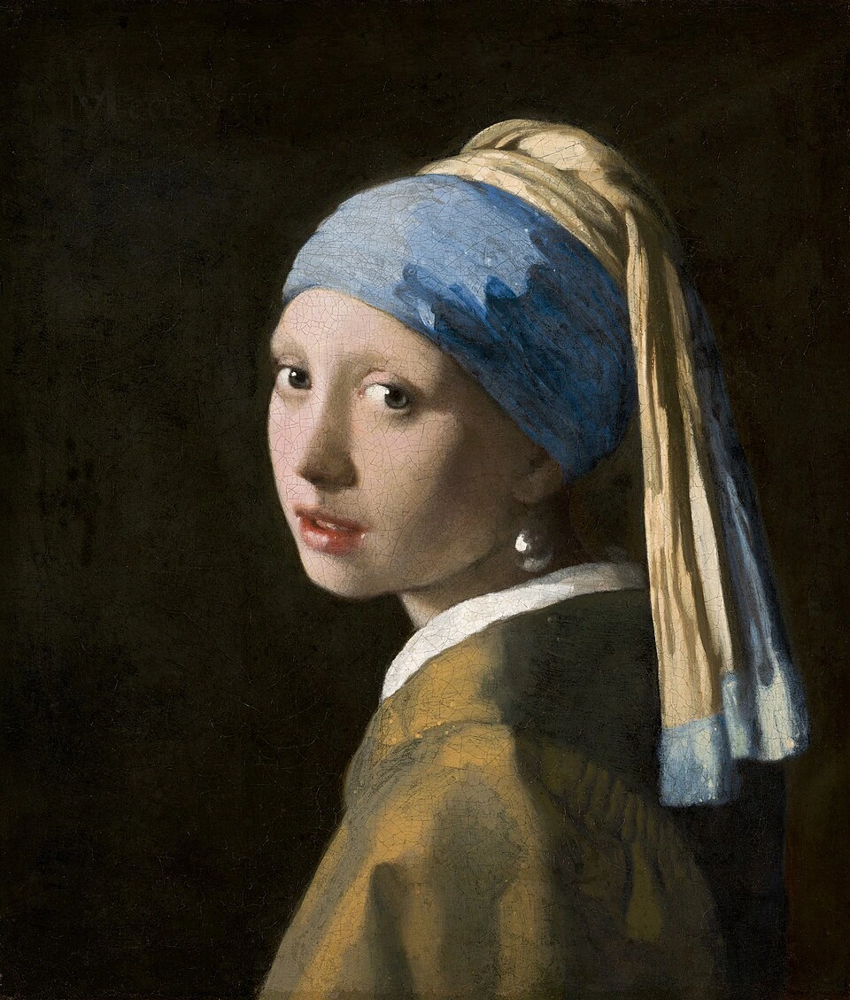

瞳・唇・真珠の小さな光を追う。暗い背景と大きな色面が、その三点を強く見せる。
《真珠の耳飾りの少女》は、顔をじっと見ているだけでも引き込まれます。ただ、実際に見る場所を三つに絞るなら、瞳・唇・真珠の小さな光です。暗い背景の中で、そのわずかな明るさがどれだけ効いているかを確かめます。
1. 最初に瞳の光を見る
瞳の中には小さな明るい点があり、それだけで目が湿って光っているように感じられます。
顔全体を読む前に、この小さな点を一つ見つけます。
瞳の光は本当に小さいので、最初に見つけると顔全体の生気がそこへ集まったように感じます。左右の目を同じように描き込むのではなく、光が当たる場所と暗い場所の差で視線を作っています。
少し離れて作品を見ると、その小さな点を意識しなくても「こちらを見ている」と感じます。近くで原因を探し、離れて効果を確かめると、少ない情報から表情が生まれる仕組みが見えてきます。
2. 少し開いた唇を見る
口は完全に閉じておらず、唇にも小さな光があります。
話しかける直前なのか、振り向いた瞬間なのか。一瞬の途中のように見えます。
唇には赤みだけでなく、湿った表面を感じさせる明るい部分があります。完全に閉じずにわずかに開いているため、完成したポーズより、呼吸や言葉の途中のような時間を感じさせます。
「笑っている？驚いている？」と表情を決める必要はありません。むしろ決めきれない状態が魅力です。目と口のどちらも少しだけ動きが残っていることで、鑑賞者が次の瞬間を想像できます。
3. 真珠に丸い輪郭はほとんどない
上側の強い光と下側の反射で、丸い真珠として感じさせます。
全部を描かず、必要な光だけを置く巧さが見えます。

真珠を近くで見ると、教科書的な丸い球を細かく描いたものではないことが分かります。暗い部分を全部説明せず、上の強い光と下の反射だけを置き、残りを鑑賞者の目に任せています。
そこで、輪郭線を探してみてください。「どこからどこまでが真珠か」が意外とはっきりしません。それでも丸く、光沢のある物体に見える。この省略こそ、実物で確かめたいポイントです。
4. 青と黄色を大きな形として見る
顔から離れ、ターバンを青と黄色の大きな色面として見ます。
暗い背景の中で二色が強く浮かび、顔と真珠へ視線を戻します。
ターバンは細かな模様より、青と黄色の大きな形として強く見えます。暗い背景、明るい顔、その外側を包む青と黄色という順に面積で見ると、人物の配置がとても単純に整理されていることに気づきます。
顔の小さな光と、ターバンの大きな色面は役割が違います。細部へ目を集める光点と、遠くからでも人物を成立させる色面。この大小の差が、作品を小さく見ても強い印象を残す理由の一つです。
5. 背景の暗さも構図の一部
背景に細かな部屋や物がないから、顔やターバンが前へ出ます。
何もない場所も、主役を強くするための大切な要素です。
背景に物語を説明する家具や風景がないため、場所や時間はほとんど分かりません。その情報の少なさが、少女の顔、ターバン、真珠だけへ集中させます。何も描かれていないように見える暗部も、主役を前へ出すための大きな面です。
美術館では、一度少女を見ないつもりで背景だけ数秒見てみてください。そのあと顔へ戻ると、暗い面から明るい顔がどれほど強く浮かび上がるかを実感できます。
6. ポーズより「振り向いた途中」として見る
肩と顔の向きが少しずれ、こちらへ振り向いたように見えます。
次の瞬間にまた向きを変えそうな時間が、静かな画面に生まれます。
肩は画面の外へ向かっているのに、顔だけこちらへ向くため、正面から座っている肖像とは違う動きがあります。身体と顔の向きのずれが、「今、呼び止められて振り向いた」という一瞬を想像させます。
この作品は特定の人物の身分や生活を詳しく説明する肖像として見るより、表情、衣装、光を組み合わせた人物表現として見ると入りやすくなります。最後に肩から顔の方向をもう一度追うと、静止した一枚の中に時間が残っていることが分かります。
最後に、瞳・唇・真珠の三つの光をもう一度順番に見ます。どれも非常に小さいのに、暗い背景と大きな色面の中では強い目印になります。細かく描き込まれた情報量より、「どこに少しだけ光を置くか」で人物の存在感が生まれていることが、この作品の大きな答え合わせです。
実物では、少女の顔だけを近くで確認したあと、一度作品全体が視野に入るところまで下がってみてください。顔の細部が読めなくなる距離でも、ターバンの青と黄色、暗い背景、小さな真珠が残ります。少ない要素で人物が成立する強さを、距離の変化でも確かめられます。
瞳・唇・真珠の小さな光を追う。暗い背景と大きな色面が、その三点を強く見せる。